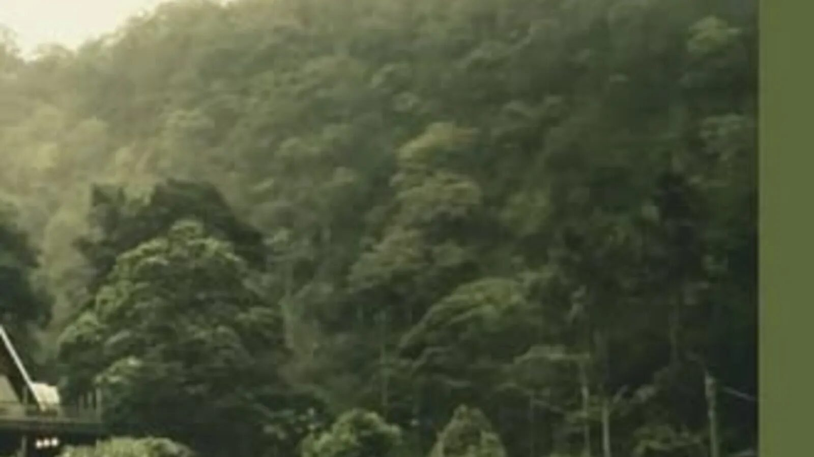
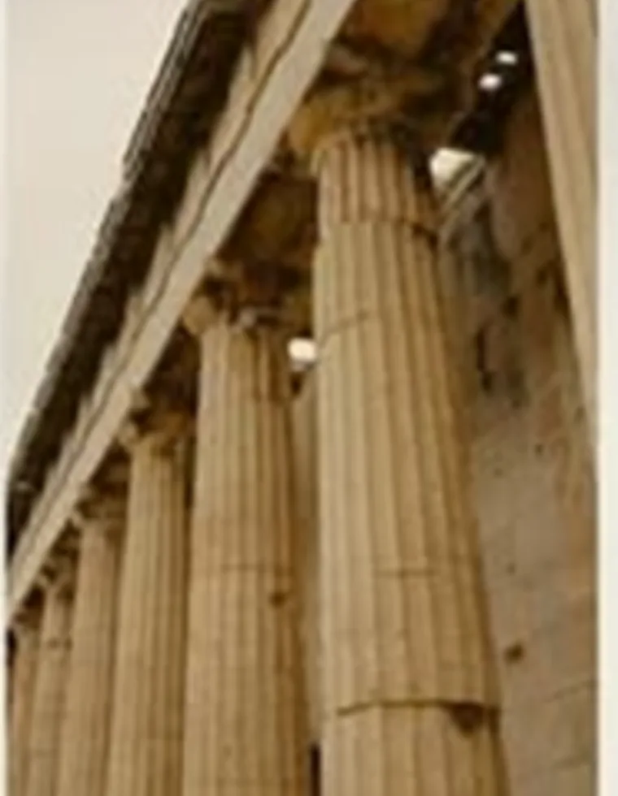

Respirar
mais devagar
Verde, trilhas e silêncio.

Circuito das Águas Paulista
Seu tempo, seu caminho
Descubra lugares, organize dias completos e transforme escolhas soltas em uma experiência que faz sentido para você.
Primeiros caminhos
Não precisa conhecer a cidade para montar um bom dia. Escolha um clima e deixe a plataforma aproximar experiências compatíveis.
Ver todos os interesses ↗Verde, trilhas e silêncio.
Cafés, produtores e mesas.
Refúgios e pausas.
Caminhos e mirantes.
Encontros pelo caminho
Quatro maneiras de enxergar a cidade. Depois, misture tudo do seu jeito.
A linha conecta a experiência
Um roteiro demonstrativo que liga lugares diferentes sem parecer uma lista de tarefas.
Montar este roteiroTipos de roteiro
Combine experiências por proximidade, duração, clima e vontade. A plataforma organiza o contexto sem tirar sua liberdade.

Escolha um ponto de partida
Use categorias para abrir possibilidades, não para prender seu roteiro.
Descoberta contextual
Tempo disponível, clima, distância e companhia mudam a melhor escolha. O contexto entra no roteiro antes da recomendação.

Centro históricoantes do próximo compromisso.
Se chover, troque o mirante por uma experiência coberta.Explore por interesse
Cada interesse abre combinações diferentes de pontos, horários e trajetos.
Perguntas frequentes
As sugestões combinam perfil, tempo disponível, deslocamento e preferências. Você pode trocar qualquer parada.
Não para explorar. Uma conta é útil para salvar passaporte, histórico e roteiros.
Sim. Quando houver uma condição especial, ela aparece junto da experiência e das regras de uso.
Sim. O roteiro é uma base editável, não uma agenda fechada.
Salve, compare e ajuste seu dia conforme ele acontece.
Da intenção à memória
O Passaporte organiza possibilidades e cria uma sequência inicial. Depois você continua escolhendo, descartando e rearranjando.
Conhecer um ponto parceiro ↗Visão territorial
O mapa conecta pontos da cidade e experiências próximas, considerando tempo real de deslocamento e o tipo de dia que você quer montar.
Explorar no mapaSeu próximo roteiro
Comece com uma experiência e deixe o resto do dia ganhar forma.